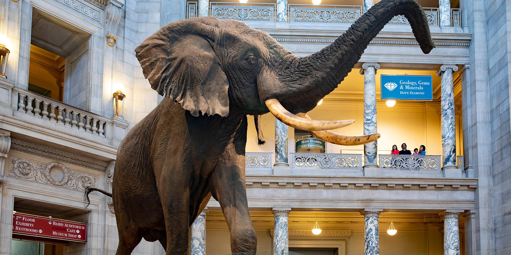
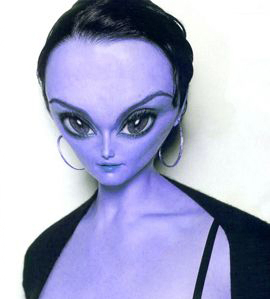

{kind=link}

{kind=link}

{kind=link}
{kind=link}
{kind=link}
{kind=link}
{kind=link}

{kind=link}
{kind=link}
{kind=link}
{kind=link}
{kind=link}

| Step 6: THE BACKGROUND |
Step 1: Alien |
Step 2: Head | Step 3: Green Skin |
Our final task is to correct any distortions that our alien-making have caused to our background. Note that the directions that follow are for those of you with stuff in your background. If you went with an entirely blank background, you will need to skip to direction 8 below.
For my image, there are some pretty evident deformities...
Notice the areas being pointed at are obviously misshapen, while the stars in the flag appear to curve around his head. While the problems with my image are obvious because I have lots going on in my background, if you took my advice and have a simpler background, you will likely still have issues like this...
Note that the seam in the wall behind Melissa's head makes a sudden curve. Fixing any of these background issues is easy, and involves putting our original background to use.
Keep in mind that since all of our pictures have different backgrounds, that the amount of adjustment you need to do will vary. If you went with a blank background, like these...

Then you will need to complete the following steps to give yourself a more interesting background (don't worry, it's not hard).
Tolerance determines how close in color the pixels around where we clicked have to be to be included in the selection, with lower numbers meaning that surrounding colors must be closer to the color we clicked on. For the image above, lowering the Tolerance to 25 causes only the blue background to be selected. You may need to lower the Tolerance and reselect a few times before you find the perfect amount.
You will now need to find an image to serve as your fake background. Feel free to hop on the Internet and search for an image that you like. Try to find something that fits your face in the image, and has objects that are sized in proportion to your actual head. Here are few examples to give you some ideas...
By the way, feel free to use any of the above image if you want. You can click on them to get the full-sized image. Beware: some of the images are really, really big.
Once your background is ready to go, your alien is complete...
EXTRA CREDIT
If you find yourself with some extra time, here are some additional things you can do for some extra credit:
If you do any of the above, save them to your Alien folder as Alien_EC1, Alien_EC2, etc.
|
High five yourself!!! If you worked hard and tried your best then you will pass. If not, well, then you are on your own.
|
|
Step 1: Alien | Step 2: Head | Step 3: Green Skin | Step 4: Eyes | Step 5: Tail | Step 6: The Background |